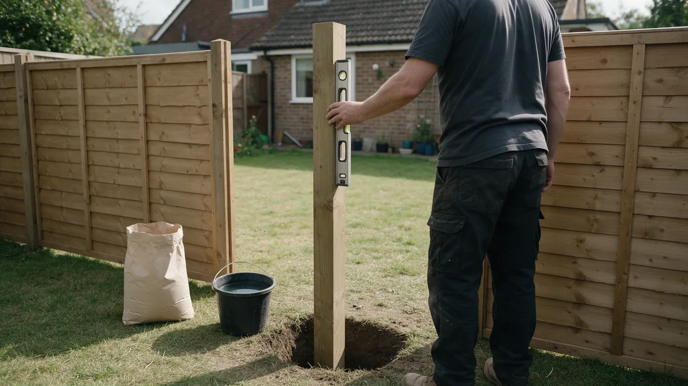

Generated photoWhat this coversOn the list
- Fence panels and postsA panel blown out, a post gone at the ground line, or a run that has started to lean. Repaired or replaced, depending on what is left of the post.
- Gates that drop or dragRe hung, hinges packed or replaced, latches lined up, and a drop bolt fitted where a gate needs holding shut.
- Gravel boards and arris railsThe rotten rail that drops a close board panel, and the gravel board that is letting the boards sit in wet soil.
- Shed roofs and doorsRe felted roofs, doors that have dropped on their hinges, and a hasp that no longer lines up.
- Loose slabs and stepsA rocking slab by a back door, a step edge come away, and the trip hazards that come with both.
- Outside taps, hooks and railsBrackets, hose reels, washing lines and the rest of the small outside fixings, into whatever the wall turns out to be.
What goes elsewherePassed on
- A whole new fence lineTwenty panels and a new run of posts is a fencing contractor, and they will be quicker and better value at it.
- Anything off a tall ladderHigh gutters and roof work go to somebody set up for working at height.
- Laying a patio or a pathA slab or two, yes. A whole patio dug out and laid is a landscaper's job.
Drawn, not photographed
One rotted post, two honest repairs
The same fence drawn three times. What is left of the post below ground is what decides which of the two repairs is the right one, and that is why we look first.
Gone at the ground line
A spur bolted alongside
A new post in a new hole
Rot happens in a band, not all over
Timber in the ground stays wet and timber in the air stays dry, and neither of those rots quickly. What rots is the band where the two meet, right at the ground line, because it is wet and dry in turn all year.
So a post that snaps at the ground will usually be sound timber a hand's width above and a hand's width below the break. That is not a technicality, it is the thing that decides the repair.
Spur or new post
If there is good timber left above the rot and the concrete around the stump is still solid, a concrete spur set alongside and bolted through the post is a proper repair, not a bodge. The panels stay where they are and the run goes back into line the same day.
If the post has gone further than that, or the concrete has broken up, the whole thing comes out and a new post goes in. That means lifting the panels either side to get at it, so it is more work, and there is nothing of the old post left to go again.
Which side of the fence is yours
Worth knowing before anybody starts. The deeds usually say, and the old rule of thumb about posts and rails facing the owner is only a rule of thumb. If a repair would mean standing in next door's garden, that is a conversation to have with them first rather than something we can sort on the day.
Gates drop because they are heavy and hung on two points
Nearly every dropped gate is the top hinge working loose in the post, the post itself leaning, or a gate that has sagged across its own diagonal. The first two are quick. The third needs a brace put back across the gate so it carries its own weight again.
Questions
About this sort of job
Can you match my existing panels?
Usually. Close board and lap panels come in standard heights, and we will tell you if yours is an odd size before you order anything.
Do you do concrete posts?
We can fit a panel into existing concrete posts and fit a concrete spur to a timber one. Setting a full run of new concrete posts is fencing contractor work.
Will you work in the rain?
Most of it, yes. Setting a post is better done dry, and we will say if it is worth waiting a day.
Put it on the list
Send the room, the thing and what is wrong with it, and we will tell you what fits in a visit.